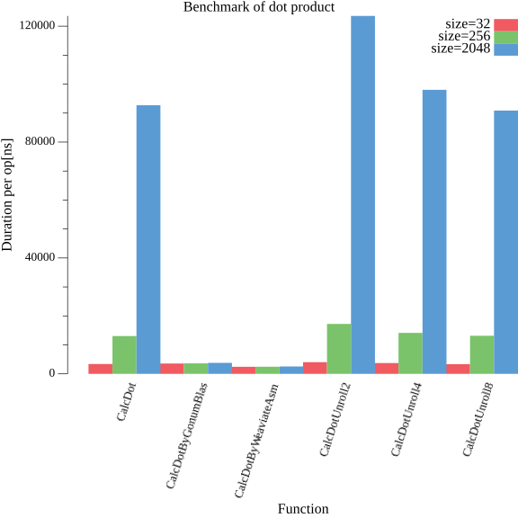

lab_note
About
Projects
Categories
All
(41)
3Dプリンタ
(1)
Amplify
(1)
AWS
(3)
C++
(1)
Claude Code
(1)
DICOM
(1)
Elm
(1)
GCP
(2)
glutin
(1)
Go
(3)
Jupyter
(2)
Kubernetes
(2)
Linux
(3)
OpenGL
(1)
Python
(11)
Ray
(1)
RP2xxx
(1)
Rust
(6)
SBC
(3)
Ubuntu
(3)
Web
(4)
Zig
(2)
アルゴリズム
(2)
クラウド
(3)
コンピュータグラフィックス
(3)
ネットワーク
(1)
ハードウェア
(1)
信号処理
(3)
分散システム
(1)
数学
(2)
機械学習
(4)
画像処理
(3)
組み込み
(4)
線形代数
(4)
開発環境
(3)
類似ベクトル検索
(1)
Milk-V DUO S をrocサーバーに仕立てる
Linux
組み込み
SBC
RISC‑Vベースの低価格SBCであるMilk‑V DUO Sを使い、ライン入力／出力をネットワークに載せるオーディオサーバーを作りました。プロトコルは低レイテンシなroc（roc‑toolkit）を採用し、システムはduo-buildroot-sdk-v2で構築しています。技適の観点からオンボードWi‑Fiは使わず、USBのWi‑Fiドングル（…
Oct 15, 2025
Claude CodeをWebブラウザから使う
開発環境
Claude Code
Web
Claude Codeはターミナルからの利用が前提となっています。しかし、モバイル環境からの利用には中々不便だったりします。そこで、ここではブラウザ経由でClaude Codeを利用することでこの問題の解決をここみます。
Jul 11, 2025
Ubuntu Server on RP4 をネットワークブートで運用する
Linux
組み込み
SBC
Raspberry Piをネットワークブートで運用するための環境構築を行いました。 ブートに必要なファイルは、先日構築したゲートウェイ上でホスティングしています。
May 16, 2025
Radxa Cubie A5Eゲートウェイをとして仕立てる
Linux
組み込み
SBC
Ethernetポートを2つ備えた低価格なSBCとして、Radxa Cubie A5E があります。 今回はこのSBCを用いて、以下のネットワークサービスを提供するシンプルなゲートウェイとして構築しました。
May 9, 2025
PICO-SDKによるシンプルなタスクスケジューラーの実装
C++
組み込み
RP2xxx
マイコン開発において、RTOSを導入するほどではないものの、ループベースの実装では複数の周期処理が煩雑になる場面があります。 そのようなケースに対応するため、PICO-SDKが提供するAPIを利用して、簡易的なタスクスケジューラーを実装しました。
Apr 26, 2025
M推定を用いたPCAについてのメモ
Python
機械学習
外乱を含むデータに対して、精度よく統計量を推定する方法にロバスト推定があります。このロバスト推定の代表的な方法の一つに M推定があります。
Mar 16, 2025
devcontainersでCUDA環境を整える
開発環境
devcontainersのFeaturesを使用していい感じにCUDA開発環境を整えることができたので、そのメモです。
Sep 30, 2023
Zigで多態性を表現する
Zig
実体を表現する構造体を
union(enum)
でまとめ、関数の呼び出しの際に自身を
switch
で分岐することで呼び出す関数を判別します。 この際
switch
の対象に
inline else
を指定することで記述を簡略化することができます。
Jul 17, 2023
Zigでレイトレーシングをしてみる
Zig
コンピュータグラフィックス
Rustの場合と同様に、Zigの勉強を兼ねて，こちらを参考にレイトレーシングを写経してみました． 単純に写経するだけでは面白く無いので、comptimeでレイトレーシング処理を実行することにしました。
Jun 29, 2023
ほとんどPythonで作るWebアプリケーション
Python
Web
少し前にGoでWebアプリを作成するgogogoというプロジェクトに倣って、 ほとんどPythonのみでWebアプリケーションを作成してみました。
Nov 30, 2022

続・Goによるdot積のベンチマーク
Go
線形代数
WeaviateというGo実装の類似ベクトル検索エンジンで使用しているdot積が非常に早そうだったので再度ベンチマークを取ってみました。
Nov 16, 2022
Goによるdot積のベンチマーク
Go
線形代数
Goにて類似ベクトル検索を実装したところ、dot積の速度がパフォーマンスの律速となりました。 そこで、Goにてドット積のベンチマークを行い、各種実装方法の速度を比較してみました。
Nov 8, 2022
OctoPrintのプラグインを作ってみる
Python
3Dプリンタ
OctoPrintからSwitchBot PlugのOn/Offを制御するプラグインを作ってみました。 今回、このプラグインの作成を通してハマった点のメモを残しておきます。
Nov 5, 2022
ARモデルによるシンプルなボイスチェンジャ
Python
信号処理
音声の生成過程をソースとフィルタによってモデル化する手法として、ソースフィルタモデル
[4]
が知られています。 今回、このフィルタをARモデルを用いて実装し、ソースフィルタモデルによるシンプルなボイスチェンジャを作成しました。
Oct 24, 2022
XG-C100Cを追加してオンボードNICとブリッジ接続する
Ubuntu
Ubuntu 22.04で運用している開発用マシンにXG-C100Cを追加した記録です。 最終的に以下のような環境を構築します。
Aug 12, 2022
KD木と次元の呪い
機械学習
数学
Python
取り扱うデータが高次元になると次元の呪いと呼ばれる問題が生じることが広く知られています． この次元の呪いが示す問題は, 使用される文脈に応じて様々であると思います． ここでは，KD木
[2]
を用いた近傍探索における問題について考察します．
Feb 16, 2022
Goで類似ベクトルを検索する
Go
アルゴリズム
機械学習
類似ベクトル検索
類似ベクトル検索を実現する代表的な実装にAnnoyがあります． 今回，Goの修練としてAnnoyの一部機能をGoで再実装しました．
Feb 1, 2022
cargo-editが上手く動かない時の回避策
Rust
cargo-edit v0.8.0が上手く動かなかったので，その対処法についてのメモです．
Jan 30, 2022
AWS Amplifyのメモ
AWS
Web
クラウド
Amplify
AWS Amplifyを使ってみて個人的にハマったことのメモです．
Jan 3, 2022
RustによるシンプルなGuidedFilterの実装
Rust
画像処理
高速なエッジ保持平滑化フィルタとしてGuidedFilter
[1]
が広く知られています．この記事では輝度信号に限定したシンプルな実装を紹介します．なお，実装にはRustとimageクレートを用いました．
Sep 30, 2021
USB to TTLx4ケーブルの作成
ハードウェア
USBハブとUSBシリアルコンバータとを組み合わせることで，USB(1ch) to TTL(4ch) の変換ケーブルを作成しました．
Aug 26, 2021
k3sクラスタ on Raspberry Pi 4
Kubernetes
Raspberry Pi 4+k3sで構築したクラスタに関するメモです．
Aug 21, 2021
Pythonでpingの実装してみる
Python
ネットワーク
ネットワークの疎通確認を行う際など，pingコマンドにお世話になっている方は多いと思います．私も勿論その一人です． ですが，実際pingは何をしているのか？という点は前々理解していませんでした．そこで，pythonにてpingのサブセット（エコー要求とエコー応答のみ）を実装してみました．
Aug 1, 2021
paaaaathによる統一的なファイルアクセス
クラウド
Python
AWS
GCP
以前の記事で，smart_openによって統一的にファイルアクセスが可能であることを紹介しました． しかしながら，
//
を適切に扱うことができないため，URLを扱うには問題がありました． そこで，この問題を解決しsmart_openをラップしたpaaaaathを作成しました．
Jun 6, 2021
ソフトマックス関数を用いた混合ガウスモデルの計算
機械学習
信号処理
Python
多峰性のある分布表現する方法として，ガウス分布の線形結合を用いる混合ガウスモデルが広く知られています． しかしがなら，観測したサンプルから混合ガウスモデルのパラメータを解析的の求めることはできません． そのため，EMアルゴリズム等を用いて数値計算的にパラメータを推定します．
May 30, 2021
Ubuntu 20.04をシリアルコンソール経由で操作する
Ubuntu
普段SSHで管理しているサーバーが，ネットワーク関連のトラブルに見舞われると，いつも通りにログインできず色々と大変です． そこで，Ubuntu 20.04をシリアルコンソール経由で操作する環境を構築します．
May 26, 2021
Rustでレイトレーシングをしてみる
Rust
コンピュータグラフィックス
Rustの勉強を兼ねて，こちらを参考にレイトレーシングを写経してみました．
Mar 30, 2021
glutinに入門してみる
Rust
glutin
OpenGL
コンピュータグラフィックス
glutin に入門した記録です． Objファイルをロードして，スタンフォードバニーを表示するサンプルプログラムを作成します．
Feb 1, 2021
starshipの導入
開発環境
startshipを使用するためには，事前にNerdFontを導入する必要があります． そこで，今回はCicaを使用しました． 導入はリリースページから配布されているアーカイブをダウンロードしttfファイルをダブルクリックで完了です．
Jan 6, 2021
型レベル整数ライブラリtypenumの紹介
Rust
型レベル整数とは，型によって整数を表現する方法です．この型とは整数を表す
i32
や文字列を表す
String
と同様のものです．すなわち，１を表す型や，2を表す型を定義し，それらによって整数を型レベルで表現します．
Dec 13, 2020
evcxr_jupyter - Rust on Notebook
Rust
Jupyter
Jupyter Notebookはカーネルを切り替えることにより，様々な言語で開発することができます．ここでは，Rustのカーネル実装であるevcxr_jupyterを用いて，NotebookによるRust開発に挑戦してみます．
Nov 15, 2020
Least-Squares Estimation of Transformation Parameters Between Two Point Patterns の読解
画像処理
線形代数
拡大と回転と並進とによって実現する幾何学変換に相似変換があります．これは，画像間の位置合わせ等に用いられます． 具体的には，互いに対応する点
\({x_{i}}\)
と
\(y_{i}\left(i = 1, 2, \dots n \right)\)
が与えられた時，それらの間に存在する相似変換を推定するといったものです．
Nov 8, 2020
smart_openによる統一的なファイルアクセス
クラウド
Python
AWS
GCP
ファイルの格納先(ファイルシステム，S3，GCS等)毎にIO処理を記述すると，プログラムが複雑になりがちです．ここでは，それらを統一的に取り扱うことができるsmart_openについて述べます．
Oct 21, 2020
Ubuntu 20.04 LTS Server でUSB-NICを使う
Ubuntu
このUSB-NICをUbuntu 20.04から使用するために行った作業記録です．
Oct 17, 2020
DICOMにおける文字コードの取り扱い
DICOM
DICOMを取り扱うライブラリの多くは海外製であるため，日本語の取り扱いが得意で無いことが多いです. そこで，DICOMにおいて日本語を正しく扱うために色々と調べたのでまとめます．
Oct 12, 2020
移動平均フィルタの零点と周波数特性
信号処理
Jupyter
最も単純なローパスフィルタとして，移動平均フィルタが広く知られています． しかしながら，その詳細な性質を確認する機会はあまり無いのではと思います． そこで，移動平均フィルタの伝達関数，複素平面における零点の分布，周波数特性を示します． そして，ローパスフィルタとしての特性を再確認します．
Oct 10, 2020
GitHub ActionsでWebサイトを自動更新する
Elm
Web
GitHubPages + GitHub Actions でコンテンツを自動的に更新するWebサイトをつくってみました．GitHub Trending に登場したリポジトリに付与されていた topics を一覧表示するサイトです．言語ごとの用途がざっくりとした感じでみることができます．
Aug 9, 2020
純粋なバイナリヒープ
アルゴリズム
純粋なヒープを実装する場合，Braun Treeなど色々と適したデータ構造があるらしいですね． でも、あまり詳しくないので今回は馴染みの深いバイナリヒープを実装する方法について調べてみました．
Jun 27, 2020
三次元空間における行列演算の復習
数学
線形代数
ぱっと思いつかなかったのでメモ．
Jun 27, 2020
5行で書くポアソンブレンディング
画像処理
Python
画像の滑らかな合成アルゴリズムにポアソンブレンディング(Poisson Image Editting)があります．これは，ポアソン方程式を解くことで元の勾配を保ちながら，境界部分が連続となる合成画像を推定するというものです．…
May 31, 2020
Raspberry Pi 4 + k3s + Rayで分散処理を試す
Kubernetes
Ray
Python
分散システム
Raspberry Pi 4+k3s+rayでクラスタを作成して，分散処理の実験を行います．Raspberry Pi 4 には事前にUbuntu 20.04を導入しておきます．
May 25, 2020
No matching items